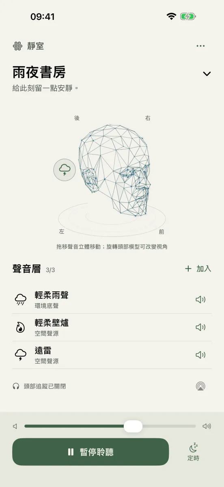
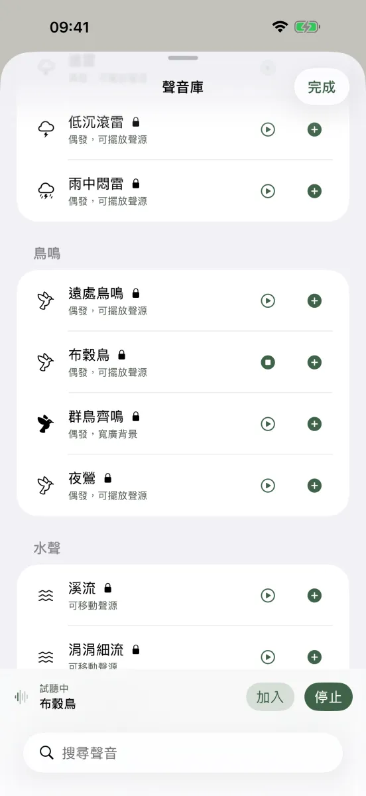
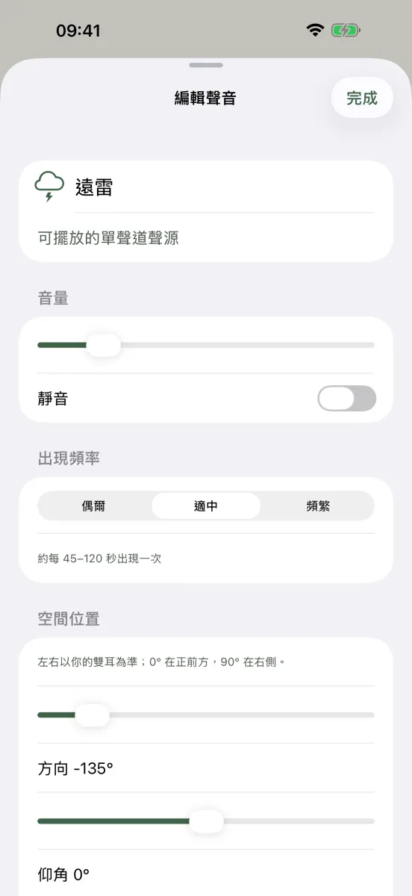
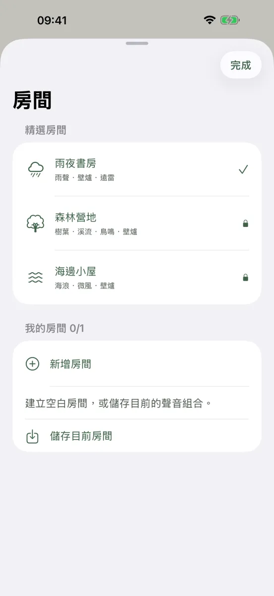

聲音有真實的位置
在 3D 聆聽者周圍拖移每個聲音：左右、前後、上方或下方都可以。也能精確設定方向、仰角和距離。寬廣的環境底聲穩定地圍繞著你。
適用於 iPhone · iOS 18 或以上版本
靜室把自然聲音擺放在你身邊：左側窗上的雨，前方的溪流，身後不遠處的爐火。戴上耳機，開始聆聽，再把房間調整成最舒服的樣子。

在 3D 聆聽者周圍拖移每個聲音：左右、前後、上方或下方都可以。也能精確設定方向、仰角和距離。寬廣的環境底聲穩定地圍繞著你。
雨、雷、鳥鳴、溪流、海浪、風、蟲鳴、腳步與爐火。錄音片段自然變化，聽久了也不像短循環。所有聲音（包括 Pro）都能先試聽再加入。
雷聲、鳥鳴、水滴與腳步會不時出現。每一種都能選擇偶爾、適中或頻繁；腳步還可以持續散步。
從雨夜書房、森林營地或海邊小屋開始，或建立一個空白房間。變更會自動儲存；隨時可以重新命名、複製或覆蓋已儲存的房間。
使用相容耳機時，轉頭後空間聲源仍會停在原處。一般耳機也能聽到固定的空間音效。
不需帳號、沒有廣告、沒有分析。聲音隨 App 安裝，聆聽、編輯和儲存都不需要網路。睡眠定時結束時會輕輕淡出。



一次性購買 · 不是訂閱
價格以你所在地區的 App Store 顯示為準。